how are you doing today? i hope you're doing well, and i hope you have a safe flight to california.
i wish i could be there with you, but i guess i'll have to be patient for now.
hopefully we'll have a lot of free time in the future, so we can travel the world and experience all sorts of new things together!
make sure to send me lots of pictures of anything cool that you see and all the yummy food while you're there. and most importantly, make sure to send me pictures of you as well!
anyway, can you believe it? it's already been a year since we've started dating!
time sure does fly when you're spending it with someone you love huh.
throughout this year we've done so much together, and i'm glad i was able to make many memories with you.
i'll always cherish those memories because they hold a deep meaning in my heart.
i don't think anyone else matches me the way you do. i guess that's because we're both pretty weird, but you're one of the only people besides my family that make me feel comfortable enough to be myself.
you make me feel like i can open up to you about anything, which can be hard for me to do sometimes.
so, i just want to say thank you for everything you've done for me. i appreciate even the littlest things because they're not little to me.
i should also say thank you to etana because she was my wingman during the thanksgiving party.
speaking of the thanksgiving party, isn't that when you first started liking me? at the time, i had already liked you like crazy for a while!
although, before that party because, i almost gave up my feelings for you because i didn't think that you would ever like me back and i didn't want to ruin what we already had between us.
but after i saw you that day, i knew that it was impossible for me to stop liking you.
you made my heart race so fast that i thought i was going to have a heart attack. lucikly, jason would've been there to save me if i did have one.
after that, everyone in my family knew that i liked you because it was so obvious that i couldn't hide it even if i wanted to.
they were also telling me that you liked me, but i didn't believe it. i remember joyce, abby, brittany, and even my aunt bich were convinced that you liked me.
i think you also tried to drop me hints, but i was too oblvious to notice them.
i should've realized when you held my hand in the car that one time, but i didn't. i think i was so convinced that you didn't like me that i played it off as something friends do.
boy am i dumb.
on that same day, brandon and vincent told me that you liked me back, so i went to your house to confess my feelings for you and to ask if i could be your boyfriend.
kind of crazy how you told brandon you liked me twice, and he ended up telling me both times.
but everything worked out in the end, so i guess you can't really blame him.
then, you went to california for winter break and i couldn't see you for 2 weeks until you got back. that was the most excruciating wait of my entire life.
remember when i told you that i loved you after we had only been dating for a week?
it's funny looking back at it now, but at the time it was very embarrassing for me because i said it so fast.
i really did feel that way about you, but maybe i should've waited a little longer to say it.
oh, and during that time we were both applying to colleges and hoping to go to the same one.
that's also when i wrote my college essay about you, and it was pretty much a love letter. i'm still very proud of that essay to this day, but i did get made fun of because of it.
after what felt like an eternity, you finally came back from vacation, and we went on our first date!
i remember being very worried because you were coming to my house when no one was home at the time. i had to call brandon and vincent to make a u-turn when they were on their way to the gym so that you wouldn't be waiting alone
then, we went to the mall and walked around for a while before we went to eat at seoul korean restuarant. the food was decent, but i had a great time because i was there with you.



